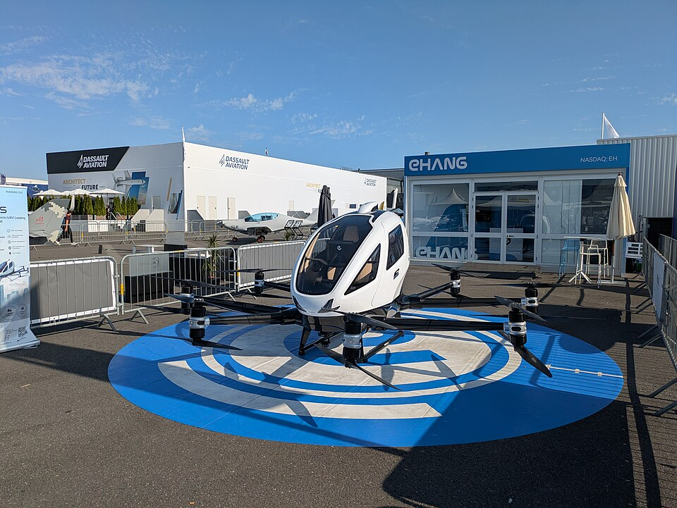

EH216-S：什么场景可行，单机运营何时打平？
按本报告的运行假设，短程观光比高频通勤更符合航时和补能约束。基准模型中，报道票价即使在满座时也无法覆盖单机成本。
- 公布航时
- 25 分钟
- 基准运力估算
- 3 架次/日
- 满座盈亏平衡票价
- 556 元/人


01五条核心结论
以下五条构成本次调研的判断主线。每条都标注了支撑它的证据等级，以及它不能被用来支持什么。
真正的护城河不是构型，而是审定证据链
EH216-S 是全球唯一同时持有 TC、AC、PC、OC 的载人 eVTOL官方。 截至 2026 年 9 月，Joby 处于 FAA 五阶段审定的最后一阶段，自方工作完成 20%、局方接受 10%；Archer 于 2026 年 4 月关闭第三阶段， 两家均未取得型号合格证媒体分析。多旋翼构型可以照抄，三套飞控的失效概率论证与九万架次运行数据不能照抄。
参数把它的市场锁死在「体验」，不在「通勤」
航程 30 公里、航时 25 分钟、充电约 120 分钟厂商披露。按 25 分钟飞行加 120 分钟补能加 10 分钟周转测算， 单机日理论架次约 3 班，年可售座位不足 2000 人次本报告估算。 这个周转率不足以支撑通勤产品所需的运力密度，只能支撑景区点对点观光。
订单规模成立，需求真实性尚未验证
在手意向订单超 1000 架，国内批量订单超 1100 架企业经媒体。 但客户主要是地方国资平台与金融租赁公司，多数意向订单未支付定金媒体调查。 这类订单反映的是地方产业布局意愿，不是终端出行需求。
跨过了「能不能卖」，没跨过「能不能赚」
2025 年营收 5.095 亿元、同比增长 11.7%，毛利率 62.0%，交付 221 架；但全年净亏损 2.31 亿元。 Q4 单季净利润 1050 万元，为上市后首次 GAAP 季度盈利财报。 规模效应出现拐点迹象，尚不构成稳态盈利能力。
电池比能量影响航时，运营盈亏还取决于周转与客流
据企业披露，搭载固态电池的 EH216-S 在 2024 年 11 月试飞中飞行了 48 分 10 秒，480 Wh/kg 为电芯指标。单次试飞提供了延长航时的证据。量产电池包的可用能量、寿命和商业运营表现仍需独立证据。运营盈亏还取决于补能时间、票价和上座率。
02研究概述
本报告分两卷。本卷（卷一）回答「能不能做、卖给谁」，姊妹篇《EH216-S 全方位安全分析》（卷二）回答「凭什么安全、监管为何认」。两卷共用同一套事实基线，可独立阅读，也可对读。
为什么研究它
EH216-S 不是性能最好的载人 eVTOL，而是唯一已经跑完审定全流程、进入售票运营的那一架。研究它可以绕开「概念车参数」的虚火，直接检验一条已被监管确认的工程路径究竟支撑什么、不支撑什么。这对判断整个品类的落地节奏，比对比谁的航程更远更有价值。
用什么方法
| 步骤 | 做法 | 产出 |
|---|---|---|
| 取证 | 先官方、再标准、后学术、末媒体的优先级检索，双语句检索式留档 | 20 条来源的证据矩阵，逐条标注可支撑的论断 |
| 核算 | 用时间闭合、量级检验、横向对标三重方法验证公开参数 | 质量与功率预算、能量核算、单位经济模型 |
| 判决 | 拆成四条可证伪命题，逐条给出成立与否及其边界 | 结论与残余不确定性清单 |
数据口径的三条规则
- 同维度冲突取官方值。最大起飞重量官网记 620 kg，二手来源多记 650 kg，本报告取 620 kg 并保留冲突提示。
- 口径不同不合并。低空经济规模存在 7151 亿元、8592 亿元、1.5 万亿元三个读数，统计边界不同，分列呈现，不相加。
- 预测标注为预测。「2030 年 2 万亿」是机构预测，引用时保留其预测属性与发布机构。
三条自我约束
- 不追单点预测。市场规模给区间与口径，不给一个漂亮数字。
- 不抹平冲突。官方与二手数值并存呈现，并说明取舍理由。
- 区分「已验证」与「已宣称」。四证齐全是可查的监管事实；九万架次零事故是企业自述。
03对象事实卡
下表是全站的数据基线。凡涉及数值，后续章节一律以此表为准；出现来源冲突的，在备注列保留冲突而不是抹平它。
| 项目 | 数值 | 来源与说明 |
|---|---|---|
| 型号 | EH216-S（EH216 系列载人标准版） | 区别于 EH216-F 消防版、EH216-L 物流版 |
| 制造商 | 亿航智能（Nasdaq: EH），总部广州 | 2019 年纳斯达克上市 |
| 构型 | 8 轴 16 旋翼，共轴双桨，纯电多旋翼 | 专用条件表述为「驱动 8 对旋转的升力/推力部件」 |
| 座级与操纵 | 2 名乘员，机上无驾驶员、无操纵装置 | 全程按预设飞行计划自动飞行 |
| 最大起飞重量 | 620 kg | 官网口径；二手来源多记为 650 kg，此处采用官方值并保留冲突 |
| 外形尺寸 | 宽 5.73 m × 高 1.93 m，长 6.05 m | 宽高为官网值，长度为媒体引述值 |
| 性能 | 航程 30 km；航时 25 min；最大速度 130 km/h；正常平飞 90 km/h | 官网与专用条件一致 |
| 补能 | 充电约 120 min | 官网口径；换电方案未公开 |
| 运行限域 | 低空隔离空域，最大高度约 120 m（AGL） | 专用条件限定为 UAM 环境商业载客 |
| 价格 | 中国指导价 239 万元/架；海外 41 万美元 | 2024-02-01 公布，2024-04-01 生效 |
| 适航证件 | TC 2023-10-13；AC 2023-12-21；PC 2024-04-07；OC 2025-03-28 | 运输类航空器四证顺序，OC 由运营人持有 |
| 审定基础 | SC-21-002 专用条件，2022-02-09 生效 | 七大类要求，详见证据章节 |
| 交付与财务 | 2024 年 216 架；2025 年 221 架（含 6 架 VT35）；2025 营收 5.095 亿元 | 2025 财报，毛利率 62.0%，净亏损 2.31 亿元 |
| 安全记录 | 累计 9 万+ 架次，零事故 | 截至 2026-06，企业自述，未经独立审计 |
数据基线说明：凡官方与二手来源冲突（如最大起飞重量、最大飞行高度），本报告一律采用官方值并在正文标注冲突，不做静默取舍。
04阅读路径
本卷回答「能不能做、卖给谁」。姊妹篇《EH216-S 全方位安全分析》回答「凭什么安全、监管为何认」，两卷共用同一套事实基线。
| 章节 | 要回答的问题 | 产出 |
|---|---|---|
| 01 问题定义与检索协议 | 为什么这个问题值得问，答案从哪来 | 4 条可证伪命题、双语句检索式、证据分级规则 |
| 02 系统分解与构型 | 它由哪些层级构成，边界与接口在哪 | 任务—体系—系统—部件四级分解、质量与功率预算 |
| 03 技术可行性 | 这些参数在物理上是否自洽 | 悬停功率与能量核算、参数自洽性检验、TRL 判定 |
| 04 场景与运行条件 | 它能在什么条件下飞、为谁飞 | 场景矩阵、ODD 七要素划定 |
| 05 市场与商业可行性 | 单位经济模型能否闭合 | 单机日架次、单座成本、三种情境与敏感性 |
| 06 竞品与综合判断 | 相对位置在哪，风险是什么 | 四机对比矩阵、五维评分、风险清单 |
| 07 证据矩阵与引用 | 每个数字能不能被追溯 | 20 条来源、可支撑论断、局限声明 |
| 08 全文总结 | 全书究竟想说什么 | 三问主线、三个关键结论、结论边界与最终评级 |
姊妹篇《EH216-S 全方位安全分析》承接本报告，把同一个对象放进系统安全工程的八步框架中，做危害识别、冗余架构论证与运行安全论证。两卷可独立阅读，也可对读。 前往卷二 →